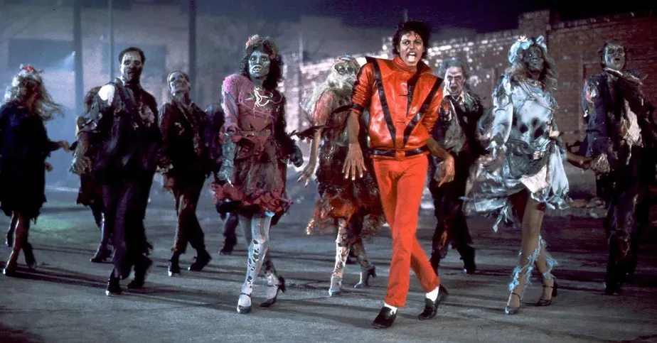

Há 65 anos, 29/09/1958, nascia Michael Jackson! Ele era 8º de 10 filhos, em uma pequena casa de Indiana, Estados Unidos, de apenas 2 quartos… É de se imaginar que sua infância não foi a mais fácil de todas. O artista norte americano começou, com apenas 5 anos de idade, a cantar junto de seus quatro irmãos mais velhos no grupo “Jackson 5”. Com o passar do tempo, algumas mudanças no grupo aconteceram… A entrada de Randy Jackson, irmão mais novo, e a saída de Jermaine, que seguiu carreira solo foram umas delas. Mas Michael continuou sendo integrante da banda e nesse momento era o compositor primário. E em 1979, com o lançamento do álbum “Off The Wall”, o astro estabeleceu a sua carreira solo. Agora ele saía desse pop chiclete e passava a explorar sons mais complexos. Ele trouxe em suas primeiras músicas solos o R&B, beatbox, sylk funk e elevou o nível da música em um patamar antes nunca alcançado.
Você gosta de videoclipe? Então agradeça Michael pela extraordinária difusão dessa linguagem. Em 1982, lançou o álbum “Thriller”, que incluía músicas como “Beat it” e “Billie Jean”. E em 83, levou às telas da MTV o clipe, de 14 minutos de “Thriller”, um dos maiores da história segundo a Billboard. Vendendo mais de 9 milhões de cópias, marcou uma quebra racial. Foi um mix perfeito de efeitos sonoros e coreografias. E por falar em coreografias, não tem como falar em Michael e não falar sobre o insuperável “Moonwalk” - que é até os dias de hoje um dos passos mais imitados. Ele também inovou ao utilizar técnicas de ilusão e muita prática ao fazer a “inclinação antigravidade", eternizada em “Smooth Criminal”. Em 1987 lançou o disco “Bad”, o primeiro a alcançar 5 singles no topo do Billboard Hot 100, ganhou inúmeros prêmios como o Grammy e vendeu mais de 45 milhões de cópias até 2012… O cantor foi o único a conseguir por 5 décadas diferentes colocar ao menos uma canção no top 10 da Billboard.